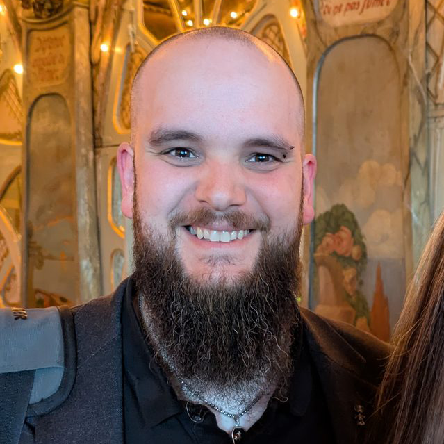

Breitenfeldstr. 2
79341 Kenzingen
Deutschland
+49 (0) 152 22763067
www.michaelschempp.de
contact@michaelschempp.de
github.com/hemi1986
xing.com/profile/Michael_Schempp4
linkedin.com/in/michael-schempp-3bb428135/
medium.com/@hemi_1337
Deutsch
Englisch
Typescript, Javascript,
PHP, Java, C#, Python,
HTML, CSS, SASS,
Angular, Svelte(kit), Vue.js
Nest.js, Express.js, Laravel
MongoDB, CouchDB, MySQL,
Git, Visual Studio Code,
Jira, Confluence,
Trivy, Istio
OAUTH2, OpenID Connect
Zero Trust, Locust
Docker, -Compose, Kubernetes,
GCP, STACKIT, Portainer,
Terraform, Ansible,
Bitbucket, github, gitlab,
ArgoCD, Bamboo,
Influx, Grafana, Prometheus,
Datadog
Software-Entwicklung & Architektur,
Verteilte Systeme, Cloud, DevSecOps,
Resilient Software, Microservices,
Generative KI, IOT
Agile Produktentwicklung,
Hausautomation, FPV-Drohnen,
Flipperautomaten
Teamleiter "Digital Development"
Europa-Park GmbH & Co Mack KG
Manager Digitale Plattformen
Europa-Park GmbH & Co Mack KG
Softwareentwickler & -architekt
Groz-Beckert KG
Softwareentwickler & -architekt
Retail United GmbH & Co. KG
Softwareentwickler
KabelWelt GmbH & Co. KG
Softwareentwickler
RSU Reifen-Center GmbH
Praktikant / Werksstudent
MediaLas Electronics GmbH
Master of Science (M.Sc.) Note: 1.5
Hochschule Reutlingen
Bachelor of Science (B.Sc.) Note: 2.2
Hochschule Reutlingen
Allgemeine Hochschulreife Note: 2.6
Philipp-Matthäus-Hahn-Schule Balingen
Professional Scrum Master 1 (PSM 1)
Scrum.org
Professional Scrum Product Owner 1 (PSPO 1)
Scrum.org
Führungskräfte-Training
Mario Cristiano (Next Level Leadership)
Englisch Sprachtraining
Impuls Sprachentraining GbR
FirstSpirit Developer Training Basic
e-Spirit AG
Angular Developer Training
Orientation in Objects GmbH
Docker Fundamentals + Enterprise Operations Course
AKRA GmbH
Cidaas Connect (Identity & Access Management) (2x Speaker)
Rust
Cloud Fest
Rust
DevOps Con Hybrid Edition
München
Machine Learning-, IOT Conference
München
Javascript-, Angular-, React-, HTML Days
München
Api-, Microservices Summit
Berlin